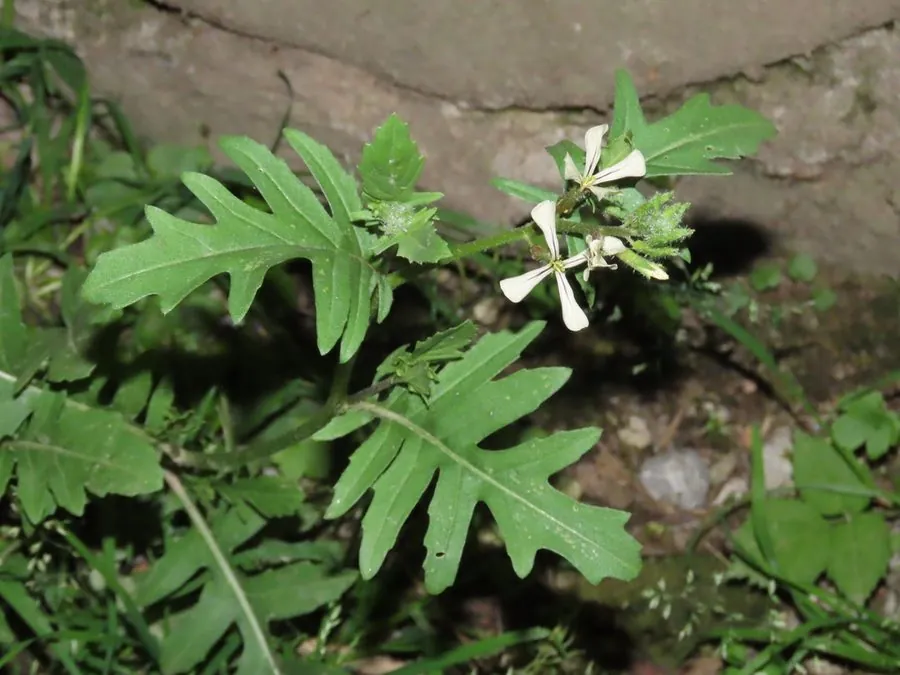

农作物与经济植物 · 植物界
芝麻菜 Eruca vesicaria

十字花科一年生草本，叶缘深裂、咀嚼有芝麻香与辛辣，是沙拉与披萨的常用香草蔬菜，原产地中海。
- 分类
- 门被子植物门纲木兰纲目十字花目科十字花科属芝麻菜属
- 栖息环境
- 地中海气候的干燥坡地、田边与菜园，喜光、耐旱、喜冷凉
- 地理分布
- 原产地中海沿岸与西亚，意大利等地广泛栽培，中国各地有引种
- 保护级别
- 暂无评估；栽培作物，逸生种群常见
物种志
芝麻菜为十字花科芝麻菜属一年生草本，株高 20–80 厘米，茎直立，疏生糙毛。基生叶羽状深裂，裂片圆钝，形似蒲公英叶，揉碎后有芝麻与胡椒混合的辛香；茎生叶较小，披针形。总状花序顶生，花白色或淡黄，花瓣带紫色脉纹，花期 4–6 月；长角果直立，种子褐色。
芝麻菜原产地中海沿岸与西亚，古罗马人已栽培食用，是披萨与意面沙拉的经典配料。嫩叶生食有芝麻香与轻微辛辣，老叶则苦味加重，可炒食或做青酱。栽培喜冷凉、阳光充足，适宜疏松肥沃土壤，春秋播种，播后 30–40 天可陆续采叶；高温易抽薹、风味变苦。它也是“芝麻菜沙拉”与“火箭菜”名称的由来。
形态与习性
- 原产地地中海沿岸与西亚
- 株高20–80 厘米，基生叶羽状深裂
- 风味芝麻香与胡椒辛香，老叶苦味加重
- 用途沙拉生食、披萨配料、青酱与炒食
- 栽培喜冷凉向阳，春秋播种，30–40 天可采
- 采收摘取外层嫩叶，可多次采收
趣味知识
- 芝麻菜的“芝麻味”并非真含芝麻，而是多种含硫化合物的复合香气。
- 它在意大利是披萨的经典配料，生面团出炉后铺上几片，余温即可烫软。
- 高温会促使它迅速抽薹，叶片变硬发苦，因此以春秋两季品质最佳。
- 它的西文名称源自意大利语，中文“火箭菜”是音译的俗称。